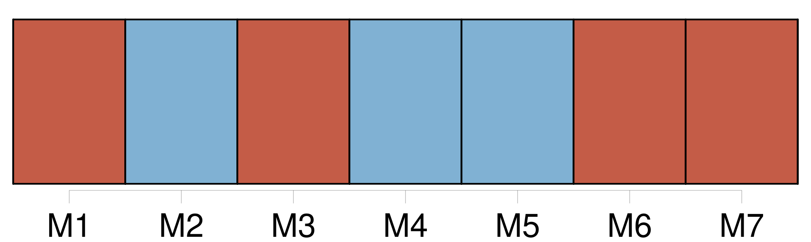
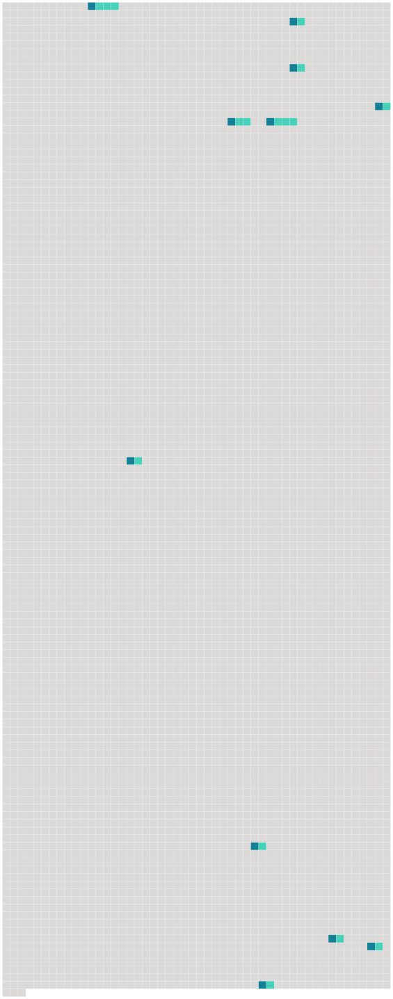

Longueur nb maillons : 11 mentions |
 |
Elle devait, ce jour -là, choisir quelques meubles pour [leur chambre à coucher] [4 phrases]
J'oubliais si vite son fiancé, qu'au bout d'un quart d'heure de marche, on m'aurait surpris en me rappelant que, dans [cette chambre] , un autre dormirait auprès d'elle. [17 phrases]
Je représentai à Marthe combien ces murs roses gâcheraient les meubles simples que « nous avions choisis », et, reculant encore devant le scandale, lui conseillai de faire peindre les murs de [sa chambre] à la chaux! [11 phrases] Jacques s'habituera bien à [cette chambre] », avait dit Marthe. [1 phrases]
Pour moi, quelle que fût l'issue de cette idylle, j'étais, d'avance, bien vengé de son Jacques : je pensais à la nuit de noces dans [cette chambre austère] , dans [« ma » chambre] ! [118 phrases] Je revins tous les soirs ; je ne pensai même pas à la prier de me montrer [sa chambre] , encore moins à lui demander comment Jacques trouvait nos meubles. [132 phrases] Moi qui goûtais d'avance l'effroi de Marthe quand j'entrerais dans [sa chambre] , je pensais maintenant à ses éclats de rire en voyant paraître ce Prince Charmant, un panier de ménagère à son bras. [40 phrases] Peut-être s'évanouirait -elle en me voyant dans [sa chambre] [4 phrases] J'allai à tâtons jusqu'à [la chambre] [20 phrases]
À son retour dans [la chambre] , comme je ne bougeais pas, elle dit : |
 |
Il est possible de télécharger la ressource sur la page Ortolang |
Si vous avez des questions ou vous voyez des erreurs, merci d'envoyer un mail à silvia.federzoni89@gmail.com |